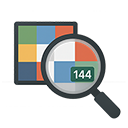

IIViewer
专为图像信号处理开发者设计的实用工具

专为图像信号处理开发者设计的实用工具
支持 RAW、MIPI-RAW、RGBIR-RAW、YUV、HEIF 等多种 ISP 中间图像格式，覆盖 8-24 bit 位深。
放大至 96X 查看每个像素的真实值，完美分析 ISP 管道输出结果。
内置数据可视化工具，分析图像统计信息和像素数据分布。
并排对比两张图像，支持差异报告和分析工具。
交互式曲线调整，预览色调映射和色彩校正效果。
支持 Windows、Linux、macOS 多平台，原生支持多种架构。
Windows 10/11
AMD64 架构
MSVC & MinGW64
Ubuntu 22.04+
AMD64 & ARM64
DEB & AppImage
Apple Silicon
ARM64
DMG & PKG

Windows 主界面

Ubuntu 中文界面

macOS 中文界面
从 发布页面 下载适合您系统的版本，启动应用后将图像拖放到窗口中即可查看。
提示：当您通过鼠标滚轮放大到 96X 时，可以看到每个像素的真实值，非常适合 ISP 开发调试。
前置条件：CMake (>=3.20)、MSVC 或 MinGW64 (C++17)、Qt5.15+、OpenSSL、libheif
git clone https://github.com/JonahZeng/IIViewer.git
cd IIViewer
mkdir build && cd build
cmake .. -DCMAKE_PREFIX_PATH=YOUR_QT_INSTALL_DIR
cmake --build . --config Release
前置条件：在 Ubuntu 22.04 上安装依赖：
sudo apt install build-essential libssl-dev qtbase5-dev \
libqt5datavisualization5-dev qtbase5-dev-tools \
libqt5charts5-dev qttools5-dev-tools qttools5-dev
git clone https://github.com/JonahZeng/IIViewer.git
cd IIViewer
mkdir build && cd build
cmake .. -DCMAKE_BUILD_TYPE=Release
cmake --build . -j 4
前置条件：使用 Homebrew 安装 Qt5：
brew install qt@5
git clone https://github.com/JonahZeng/IIViewer.git
cd IIViewer
cmake -B ./build -S . -DCMAKE_BUILD_TYPE=Release \
-DCMAKE_PREFIX_PATH=/opt/homebrew/opt/qt@5
cmake --build . -j 4
详细构建说明请查看 完整 README.md